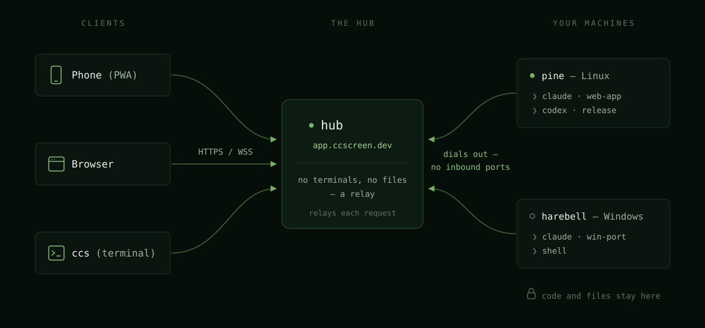

Security model
cc-screen's security model is short enough to state honestly. This page is it — what the hub sees, what the agents do, where the credentials live, and what that means for you.
The hub owns no terminals and no files
The hub — hosted or self-run — is a registry and a byte relay. It holds no PTYs, runs no agent code, and has no filesystem access of its own. Every file operation executes on the owning machine, inside that machine's home-directory confinement — the hub cannot widen it. What transits the hub is the relayed view: terminal bytes, file contents you open, session metadata.
The honest flip side: whoever controls a hub can drive every machine connected to it — that's the product working as designed, and it is exactly why you choose who runs your hub. Use the hosted one, or run your own; the software is the same.

The agents run YOLO — treat the machine accordingly
By default, cc-screen launches the coding CLIs with their approval-bypass
modes (Claude Code's flag is literally named
--dangerously-skip-permissions). OpenCode uses --auto, which approves
operations its configuration has not explicitly denied; an explicit deny rule
still wins. That's the point of unattended agents — they stop less often — but it means
a session can do anything your user account can do on that machine.
- Each session has a Skip permissions switch at creation (default on). Turn it off for a supervised session; it launches without the bypass flag and wears a "safe" badge.
- The assistant's own remote control is off unless you ask for it. Claude Code can register a terminal session with claude.ai/code and the Claude mobile app ("remote control"), and that can switch itself on from a user setting, a slash command, or a resumed conversation. Sessions cc-screen launches carry an explicit off stance instead, so a session is never quietly reachable from a second, account-bound control plane you didn't set up. Inside such a session Claude Code reports remote control as disabled by policy — that's this switch, not your employer. Turn it on per session with the Claude app switch on the create sheet; the choice is remembered across restarts and restores.
- For real containment, run the machine host in a container: the container plus its mounted home volume become the sandbox, and a runaway agent is confined there. See Self-hosting → Docker.
- File operations through cc-screen's browser/editor are confined to the machine user's home directory. (The CLIs themselves are processes on the box — the confinement bounds cc-screen's file API, not what you ask an agent to do.)
Credentials, and where they live
- Your account authenticates to the hub with a password (or Google) and
rides a signed session cookie. Headless clients (
ccs, scripts) use a bearer token instead. - Each signed-in terminal (
ccs activate) gets its own client token: hashed at rest on the hub, shown to no one (it's handed to the terminal exactly once, over the wire), stored on the client at~/.config/cc-screen-tui/credentials.toml(0600), and individually revocable —ccs logoutfrom the terminal, or Terminal clients on the dashboard. It's a client credential, distinct from a machine's uplink token; neither is ever accepted in the other's place. - Each machine has its own uplink credential, minted when you approve its
enrollment code. It's stored on the machine at
~/.config/cc-screen-rust/enroll.json, written with owner-only (0600) permissions (on Windows the filesystem's protections are weaker — the file relies on your user profile's ACLs). - Assistant provider credentials stay on the machine. Claude, Codex, Gemini,
Kimi, OpenCode, and Grok perform their own login in their own PTY/home. In particular,
cc-screen never reads OpenCode's
auth.json, rewritesopencode.json[c], startsopencode serve, or exposes an OpenCode API through the hub. The same holds for Grok: no~/.grok/auth.jsonimport, nogrok agent serve/stdio/leader. YOLO for Grok is--always-approve; deny rules still win. - The two are independent by design: a leaked account password can't impersonate a machine, and a machine's credential is scoped to that one machine — Rotate or Unlink on the dashboard kills it instantly.
- Enrollment codes (
XXXX-XXXX) are short-lived (10 minutes), single-use, and approving one requires a logged-in browser — possession of the code alone links a machine to your account only if you approve it.
Teams
Joining a team makes your machines visible to that team — read-only by default, and the invite states exactly that before you accept. The boundaries, honestly:
- Team visibility grants view-level access only: teammates see your machines and can open your sessions, but creating sessions on your machine and admin actions (updating its assistants, restarting its terminals) always require an explicit "can use" share from you. Team grants run through the same default-deny visibility predicate as personal shares; there is no separate, wider code path.
- One honest caveat: "read-level" is a scope, not a keystroke filter. A teammate who opens one of your live sessions gets a real terminal — typing into it works, exactly as with a personal session share. If a session shouldn't be typed into by teammates, hide that machine from the team.
- Files follow that same line, deliberately. Anyone you share with — a
whole machine, a single session, or team visibility — can also browse, read,
edit, download and upload files on that machine, within the agent's
$HOMEconfinement. That is wider than the session they were given, and it is not an oversight: the terminal they can already type into is an assistant running with permissions skipped, so "print that file" or "edit that file" was always one sentence away. Withholding the file browser would have hidden the access, not prevented it. Share a session only with someone you'd trust with the files that machine can reach. - A session you drive can write your clipboard; one you watch cannot. This is the product's first outbound capability — until now sharing risked what a viewer could see, never what the viewed machine could do to the viewer's device. When something inside a session copies text, that copy is delivered to the clipboard of the person actively driving that session: focused pane, focused tab, and recent typing. A teammate who merely has the session open never gets a silent clipboard write; they get a button showing exactly what would be copied, and it is frozen from the moment it appears. Text is sanitised first (control characters, bare carriage returns, trailing newlines and direction-override characters removed — the trailing-newline case is what turns a paste into an execution), anything altered or multi-line requires that click, copies over 64 KB are announced rather than copied, and a session that floods is rate-limited and then switched off. The read direction — a session asking for your clipboard's contents — is never answered by any cc-screen client, and the code that would have to do it does not exist.
- The per-machine opt-out is yours alone (the "Visible to team" toggle), whatever your role — no admin can override it — and every flip lands in the team's audit log, alongside joins, invites, removals, and seat changes.
- Leaving (or being removed) prunes every team-derived grant in both directions immediately; personal shares are untouched. Deleting a team erases its membership, invites, grants, and audit history with it.
Invitations, and the mail that carries them
An invitation — to a team, a machine, or a single session — is a row in the
hub's database plus a link at /org-invite/<token>. Where a hub is
configured with a mail relay, that link is emailed to the invited address as
well. What that does and doesn't mean:
- The link is not access. It only identifies the invitation. Accepting requires being signed in as the invited address, so a forwarded or intercepted link grants nothing on its own — whoever holds it would have to control that mailbox first.
- It does disclose what the landing page shows, to anyone holding it: for a team invite, the team's name and the inviter's email address. Treat it as you'd treat any link you hand someone.
- Invitations expire after 14 days, and cancelling one kills its link immediately — the token stops resolving whether or not it's already sitting in an inbox. Re-inviting mints a fresh token and retires the old link.
- Email is long-lived, and it isn't ours. A mailed invitation stays in the recipient's mailbox (and their provider's backups) long after it expires, and it crossed networks we don't control on the way. That's the trade for an invitation that actually arrives; the 14-day expiry and the sign-in-as-the-invited-address rule are what bound it.
- The invitation carries an open-tracking pixel, and we'd rather it didn't. cc-screen composes these as plain text with nothing embedded, but the mail provider ccscreen.dev sends through rewrites them as HTML and inserts a one-pixel image that reports back when the message is opened. We don't use that data for anything, and we can't currently switch it off on our plan. Links in the body are not rewritten — the accept URL you see is the one you get. If this matters to you, blocking remote images in your mail client stops it, and so does using the copyable link instead of the email.
- A self-hosted hub sends no mail at all unless its operator configures a relay — see Self-hosting. What a relay does to your messages is between you and that provider; the pixel above is a property of ours, not of cc-screen.
Read-only link grants
A read-only link (/s/<token>) is the one thing in cc-screen that anyone
can use without an account, so it's worth being exact about it.
What it reaches. Exactly one file, and only to read it. The link is
resolved against its own table to a single (machine, path) pair; it never
touches the sharing model, never produces the "visibility" that machine and
session shares are built on, and the endpoint behind it is hardcoded to a read.
There is no endpoint anywhere — write, list, search, attach, upload — that
accepts a link token. It serves what our editor serves: text, up to 5 MiB.
What it can't reach. The folder the file is in. The other files on the machine. The sessions, the terminal, the machine list, your account. A link holder can't enumerate other links either: the token is 32 random bytes, and unknown, revoked, expired and deleted-file all answer with the same indistinguishable "not found".
The three things a holder does learn. Be aware of them before you share:
- The file's contents, until you revoke — including future edits. It's a live view, not a copy.
- Whether the link is valid, trivially, by using it.
- Whether your machine is online. A valid link on a sleeping machine answers "this machine is offline" rather than "not found", so someone holding a live link can poll it to see when your laptop is up. That's a deliberate trade — a working bookmark shouldn't look dead because you closed your lid — but it is a presence signal about you.
The token at rest and in transit. We store only a SHA-256 fingerprint of
it, never the token, which is why we show the URL exactly once and offer
New URL instead of showing it again. But the token rides in the URL path,
so it lands wherever URLs land: the holder's browser history, and the access
logs of any reverse proxy in front of the hub. (Self-hosting? Treat those logs
as credential material — see
Self-hosting.) Responses carry
no-store and no cache validators, so no browser, proxy or CDN keeps the
content after you revoke.
Two edges worth knowing. Renaming the file breaks the link — a grant is never silently re-pointed at something else. But deleting the file and creating a new one at the same path serves the new file under the old token, because the grant is the path. Revoke rather than rely on that.
Rendering. The shared page renders your file's markdown, but never as
HTML: raw HTML in the file shows up as text, and javascript: links are
stripped. A fixed banner says the content belongs to the sharer, not to
cc-screen. Minting requires a paid account, which is also the abuse handle:
every link is attributable.
Transport: when TLS is required
The agent fully trusts whatever answers at its hub URL — once connected, it executes what the hub sends. So:
- Across the internet, the uplink must be
wss://(anhttps://hub URL derives one). Certificates are validated against the standard root store and a bad certificate fails closed — the agent won't connect. This is what stops anyone from impersonating your hub. The hosted hub is TLS-only. - On a trusted private network (a VPN/tailnet), plain
ws://is acceptable — the network is the authenticated transport.
Machines connected the standard way accept no inbound connections at all: the agent runs hub-only, binding no port, only dialing out.
Fail-closed by default (self-hosted)
The binaries refuse insecure-by-accident setups rather than warning about them:
- An agent won't bind a routable address with auth disabled.
- A hub won't start with an open uplink (no per-agent tokens) — even on loopback, because loopback hubs get fronted by tunnels. Each has an explicit env-var override for genuine dev use.
- Both reject cross-origin and DNS-rebinding browser requests independent of the auth gate.
Details and the exact variables: Self-hosting.
What we'd tell a security reviewer
- Your code and your CLI logins live on your machines and never rest on the hub. The hub relays views of them while you look.
- Session traffic through the hosted hub is TLS in transit, relayed through memory.
- The blast radius of a compromised machine credential is that machine; of a compromised account, the machines it owns plus anything shared to it — scope your shares deliberately ("can view" vs "can use").